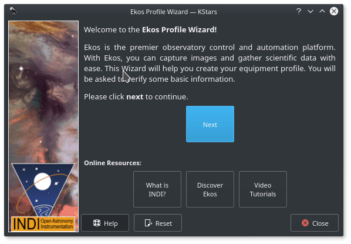
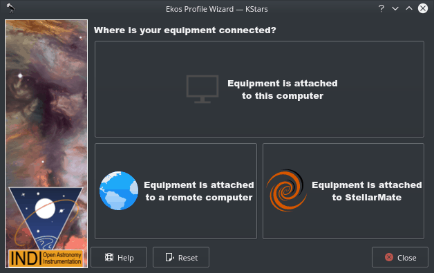
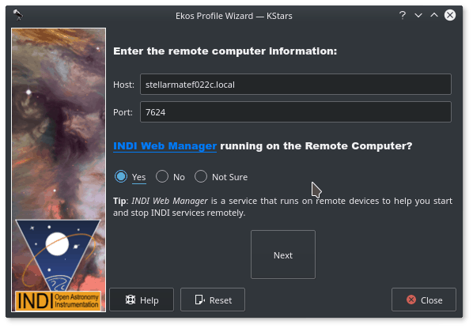
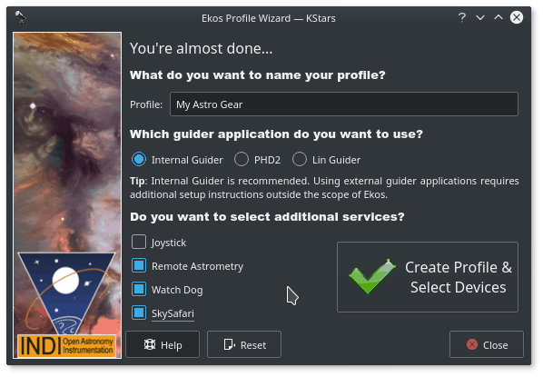

L'assistant de profil est un outil pratique pour créer un premier profil de votre matériel. Il devrait apparaître automatiquement la première fois que vous lancez KStars. Suivez les instructions pour configurer votre premier profil de matériel.
- Page de bienvenue
- 
L'écran de bienvenue contient quelques liens pour en apprendre davantage sur Ekos et INDI. Veuillez cliquer sur pour continuer.
- Page de l'emplacement du matériel
Ensuite vous tomberez sur la page de l'emplacement du matériel. Votre sélection dépend de l'emplacement où est connecté votre matériel :
Le matériel est connecté à ce périphérique : sélectionnez cette option si Ekos tourne sur votre StellarMate (via HDMI ou VNC), sur votre périphérique (Windows®, Linux®) ou sur Mac® OS.
Le matériel est connecté à un périphérique distant : sélectionnez cette option si Ekos tourne sur votre périphérique (Windows®, Linux®) ou Mac® OS et votre matériel est connecté à un ordinateur distant.
Le matériel est connecté à StellarMate : sélectionnez cette option si Ekos tourne sur votre périphérique (Windows®, Linux®) ou Mac® OS, et si votre matériel est connecté à StellarMate. Cette option n'est active que pour les versions de KStars inférieures à 3.5.8.
Cliquez sur pour continuer.
- Page de connexion à distance
Dans le cas où vous avez sélectionné la seconde option à l'étape précédente, vous verrez apparaître la page de connexion à distance où vous devrez saisir le nom d'hôte ou l'adresse IP de l'appareil sur lequel est installé StellarMate. Vous pouvez obtenir le nom d'hôte depuis l'application mobile de StellarMate. Autrement, vous pouvez construire le nom d'hôte à partir du SSID de StellarMate qui devrait être visible lors d'une recherche de réseaux wifi. Supposons par exemple que le SSID soit
stellarmate. Le nom d'hôte sera alorsstellarmate.local. Vous pouvez toujours utiliser l'application StellarMate pour modifier le nom d'hôte par défaut à votre convenance.Pour la question concernant le gestionnaire INDI, il faut toujours sélectionner Oui puisque le gestionnaire Web de StellarMate est lancé par défaut sur l'appareil. Cliquez sur pour continuer.
- Page de création de profil
Vous pouvez maintenant choisir le nom de profil de votre matériel. Ensuite sélectionnez l'application de guidage que vous souhaitez utiliser. Le guidage interne est le seul officiellement géré par StellarMate. Vous pouvez choisir ou mais les détails ne sont pas couverts pas cette documentation. Si des services additionnels sont souhaités, veuillez cocher ceux que vous voulez utiliser.

Dans l'exemple ci-dessus, nous avons sélectionné les pilotes Astrométrie distante, WatchDog et SkySafari. Des explications détaillées pour chacun d'entre eux apparaissent dans une infobulle lors du survol avec la souris. Une fois fait, cliquez sur le bouton et l'éditeur de profil apparaît.